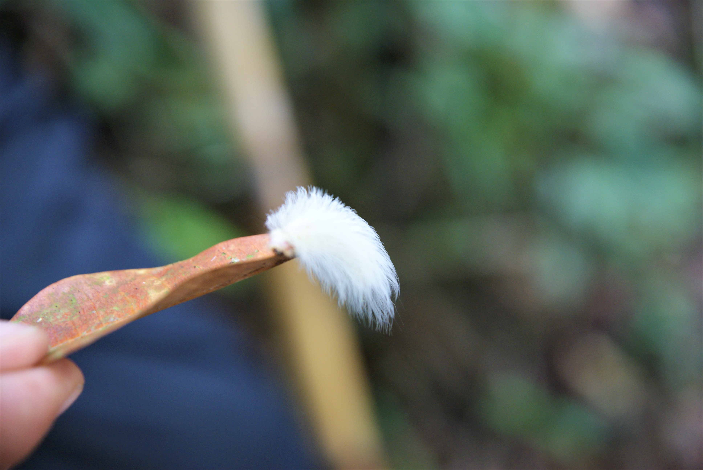
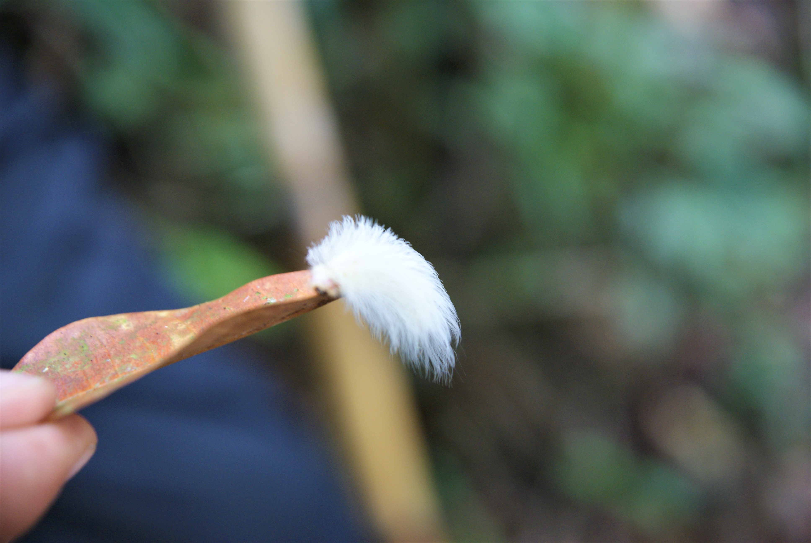

Filandia, Santa Rosa et Raquira
La fin de la vallée du café et de la poterie
Filandia
Salento en plus calme
On arrive à Filandia en fin de journée, le dimanche. Un peu sur un coup de tête. J'ai vaguement lu une fois sur un blog que c'était sympa. Du coup on y va. Le village est alors très animé. Plus qu'à Salento presque. Et avec essentiellement des colombiens venus passer le week-end ici. L'ambiance est donc très sympathique, très festive dans le village, qui est encore une fois très coloré.
On se fait une bonne nuit de repos suivie d'une bonne matinée de repos, puis on part explorer plus sérieusement le village et ce qu'il a à offrir. C'est donc un village proche de celui de Salento où les maisons se parent d'associations couleurs les plus improbables. Il y a de nombreuses boutiques d'artisanat et de restaurants de toutes sortes et des cafés bien sûr, on est dans la vallée du café après tout. Clairement ici on est prêt pour la venue des touristes, et je ne doute pas que le village va connaître un essor dans les prochaines années. Petite anecdote qui nous a surpris mais qui probablement n'étonnera pas tant de monde : beaucoup de colombiens ici viennent s'atabler à 23h pour un petit café, avant une bonne nuit de sommeil.
Il y a également un impressionnant mirador un peu à l'extérieur du village. C'est en fait tout un site un touristique avec des infos sur la région, des photos, un impressionnant point de vue à 360°, des boutiques et une cafet. Très sympathique, surtout à l'heure du coucher de soleil.
Petit tour dans la jungle environnante
Le dernier jour, sur les conseils de notre hôte, on décide d'aller faire une petit tour dans la jungle environnante. Il paraît qu'il y a des singes à voir.
On se retrouve donc avec un couple franco-colombien au point de départ de la rando. Le patron nous fait un topos sur la géographie de la Colombie et de la région autour d'un dispensable mais appréciable café (région du café, toussa toussa). Et puis notre guide fait son apparition. Et là je me dis que je ne suis pas prêt. On a véritablement Rambo, prêt à la guerre, en tant que guide. Il est équipé comme jamais, arnaché, couteaux, machète, cordes, etc. Un petit moment de panique insidieuse m'envahit. Je pensais venir "faire un tour" dans la jungle, pas braver une hostile nature. Bon mais rassurez-vous, tout ceci n'était que pures précautions, le "on sait jamais", mais y'a jamais eu aucun problème. La seule guerre en cours ici, c'est celle contre les moustiques, nous précisera le guide Alex. Et sans dire que la rando a été "finger in ze noiz", c'était clairement pas une grande épreuve physique. Après, ce qui reste impressionnant ici, c'est la faune et la flore : oui on a vu des singes, un bon paquet, des insectes (des chenilles et des papillons notamment) et des araignées. Mais c'est en parlant avec le guide que ça fait froid dans le dos : il y a ici des insectes tous plus vénimeux les uns que les autres, des grenouilles empoisonnées, des araignées mortelles (veuve noire notamment) et... des papillons carnivores !!! (mais complètement inofensifs, ils peuvent tous justes croquer un peu de peau morte, rien de plus).
Bref une bien bel expéditions, où on aura eu quelques jolis contacts avec les singes du coin.
Santa Rosa de Cabale
Les bains avec les colombiens
Alors le délir, ici, ce sont les thermes. On se renseigne unpeu et très vite on nous conseille plutôt le plus grand site, plus loin, plus cher, mais qui vaut plus le coup apparemment. Du coup nous, quitte à faire des thermes, autant que ça bombarde. Surtout qu'on a déjà loupé ceux à côte de Quito.
En effet le site est assez impressionnant par sa taille. Il faut imaginer un lieu encaissé entre deux montagnes, au bout de la vallée, avec plusieurs grands bassins aux températures et vertues différentes, entourés de la jungle et de casacades.
A part qu'on s'est bien détendus pendant cette journée, il n'y a pas grand chose à dire. Si ce n'est que les colombiens, fidèles à leur habitudes, viennent te taper la discute tranquilou pendant la baignade, savoir d'où tu viens, ce que tu fais ici, si tu aimes leur pays. Et balancer quelques blagues que je capte pas toujours. Mais ils sont comme ça aussi entre eux, ce n'est pas seulement avec les étrangers qu'ils croisent. Cela rend donc une ambiance très familiale, très bon enfant et donc très agréable !
Raquira
Journée avec Alex : poteries, danses et fincas
L'étape suivante c'est donc le village de Raquira, au nord-est de Bogota, dans la région du Boyacà (petite ambiance TMNT). C'est Maïlys qui a repéré ce village sur un blog, apparemment très célèbre pour son artisannat et particulièrement pour ses poteries. Du coup, on décide de prendre contact avec un guide pour aller faire un atelier poterie là-bas.
Mais avant celà, on se trouve une place dans un camping sur les hauteurs du village, chez César, un endroit très paisible et avec une vue imprenable sur la vallée.
Le lendemain donc, on retrouve Alex qui nous fait visiter le village puis un atelier de poterie. On voit tous le process de création, de l'affinage de l'argile jusqu'à la penture et la cuisson. L'habileté des artisants est encore une fois remarquable.On apprendra d'ailleurs que la production ici est ensuite vendue partout en Colombie, mais pas que, et qu'une bonne partie s'exporte aussi, notamment aux Etats-Unis. Et ça ne m'étonne mpeme pas. En nous balandant dans le village on a pu voir de très nombreux ateliers, de très nombreux fours, et en fait c'est dans toute la vallée que les artisants travaillent l'argile qui est ici de très bonne qualité.
Ensuite on met les mains dans le camboui... euh l'argile pardon, et on s'essaie à la sculpture avec le père d'Alex, dont c'est le métier (spécialiste des sculptures main de chevaux). On créé quelques babioles sur un tour, et ce qui paraît enfantin pour les mains expertes de notre maître l'est beaucoup moins pour nous. Mais Maïlys s'en sort remarquablement bien.
On s'entend particulièrement bien avec Alex, notre guide, et on décide du coup de passer la journée avec lui et de se laisser porter un peu. Il nous fera visiter une de ses fincas dans laquelle on prendra des cours de danses, puis on ira avec lui au monastère proche du village pour finir la journée. Et le retrouvera même le lendemain pour un dernier café. Alex est un personnage fascinant et complexe. Ayant travaillé 10ans pour l'industrie du pétrole, il a pu acheter pas mal de terre dans les environs, quelques fincas, et est maintenant dans la politique. Il vise le poste de maire d'ici 4ans. En plus de ça, c'est un ancien militaire avec des contacts encore dans l'armée et fait un peu de renseignements pour eux. Et bien sûr, guide à ses heures perdues. Bref un homme très occupé aux multiples facettes.
Voila, après ce petit tour dans le Boyacà, et avant l'arrivée des "petits", on décide de partir encore plus à l'est pour aller faire un peu de marche dans le Paramo d'Oceta et le parc d'el Cocuy.
 


 <\div>
<\div>